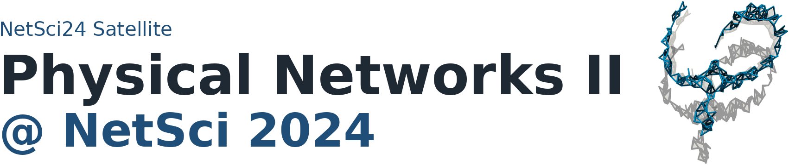
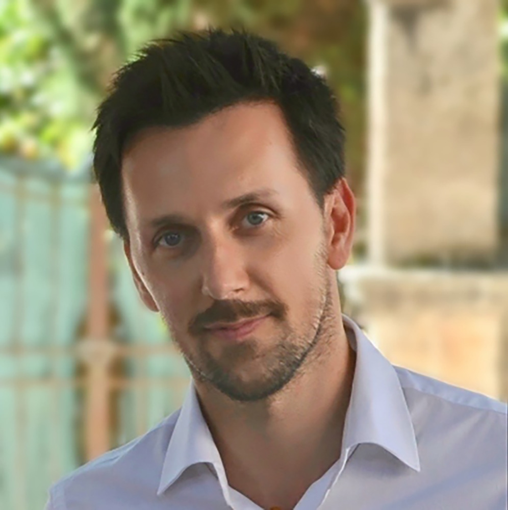
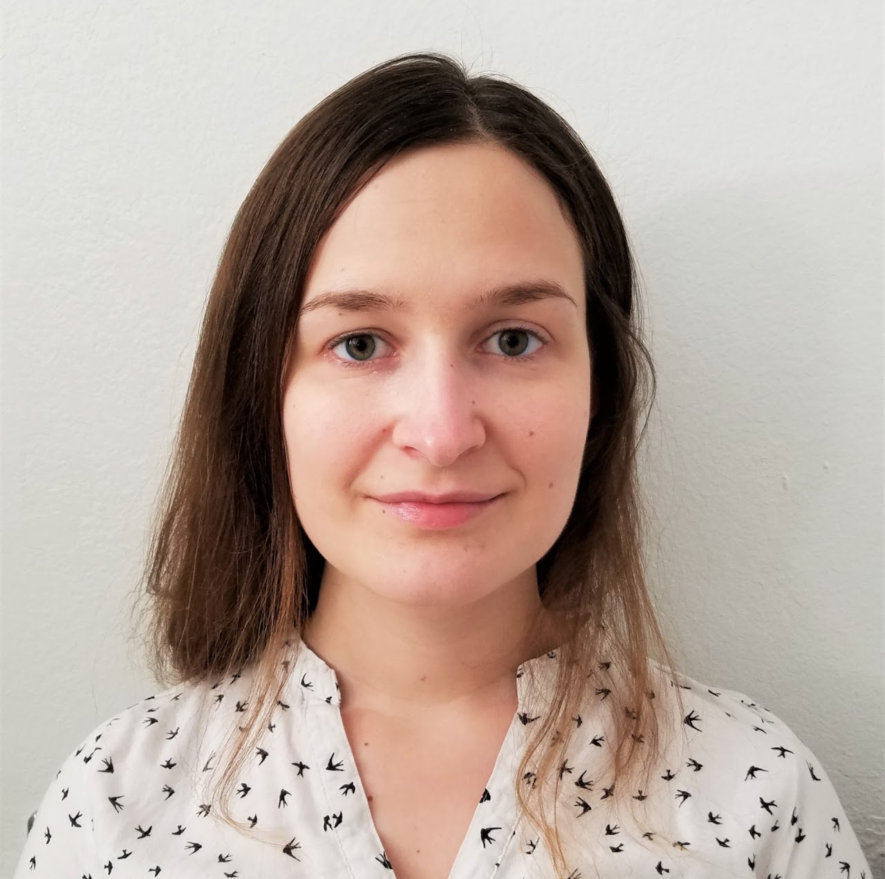
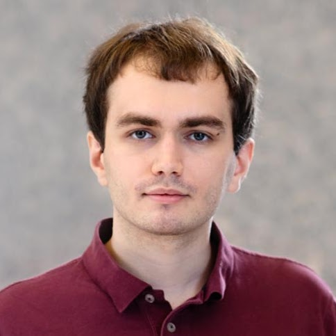
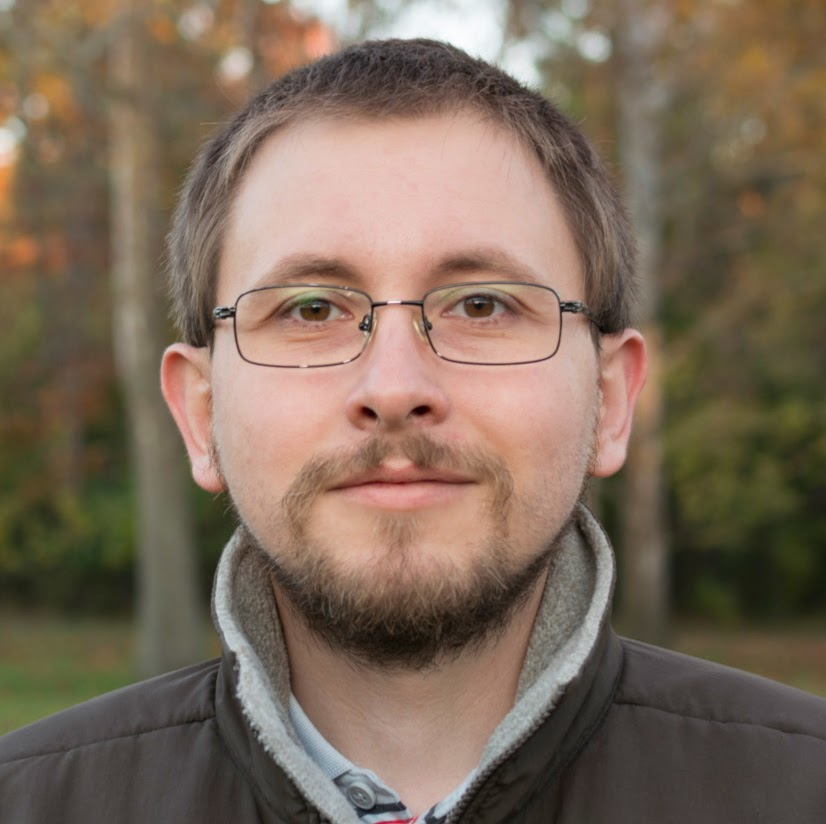

Date
June 17, 2024
Time
09:00 to 13:00
Venue
Québec City Convention Center, Quebec City, Canada
Room
TBA
Speakers
Adilson E. Motter
Department of Physics and Astronomy, Northwestern University
Filippo Radicchi
Center for Complex Networks and Systems Research, Luddy School of Informatics, Computing, and Engineering, Indiana University

Fabrizio De Vico Fallani
National Institute for Research in Digital Science and Technology (INRIA); Paris Brain Institute (ICM)
Dániel Barabási
Department of Molecular and Cellular Biology, Harvard University
Jasper Van der Kolk
Departament de Física de la Matèria Condensada, Universitat de Barcelona

Anastasia Salova
Engineering Sciences and Applied Mathematics, Northwestern University

Benjamin Piazza
Department of Physics and Network Science Institute, Northeastern University

Szabolcs Horvát
Computer Science Department, Reykjavik University
Program
Abstract
Following the lines of the first edition, the goal of this Satellite is to ignite discussions and share ideas about physical networks. The organizers opened the event with a short introductory talk outlining a thread connecting the talks in the program and their relation to physical networks.
Abstract
The graph representation of network systems as diagrams of unstructured nodes and edges has proven extremely useful, but often falls short of capturing the essential characteristics of complex physical systems. In such systems, nodes and edges themselves can embody complexity. This talk discussed networks comprising complex nodes and edges, using microfluidic and metamaterial networks as model systems.
Abstract
This talk introduced a bond-percolation model describing the consumption and eventual exhaustion of resources in transport networks. Edges forming minimum-length paths connecting demanded origin-destination nodes are removed if below a certain budget. As pairs of nodes are demanded and edges removed, the graph undergoes a percolation transition. For finite budget the transition is identical to ordinary percolation, whereas for infinite budget the transition becomes more abrupt.
Abstract
Network visualization highlights patterns in systems of nodes and edges, but spatial node positions often convey important information about geometrical and physical properties. This work addresses edge crossings from a graph-filtering perspective, asking whether an optimal balance exists between the informative benefit of keeping numerous connections and the cost incurred by their length. Simulations and human response data support an unbiased criterion to filter networks and obtain sparse representations of dense real systems.
Abstract
Machine learning models have often overlooked innateness and developmental priors. This talk derived a neurodevelopmental encoding of artificial neural networks, treating the weight matrix as emergent from rules of neuronal compatibility. Updating wiring rules rather than weights can compress parameter count, regularize learning, and select circuits with stable and adaptive performance. Adding spatial network models produces additional parameter compression.
Abstract
Geometric random graph models reproduce structural properties of real networks, including small-worldness, high clustering, and scale-free degree distributions. In these models, nodes live in an underlying metric space that conditions connectivity. This talk studied the statistical properties of the clustering phase transition, the entropy behavior across the critical point, and finite-size scaling in weakly geometric regimes relevant to real networks.
Abstract
Recent advances in electron microscopy and segmentation algorithms enable synaptic-connectivity and ultrastructure reconstructions across species. Applying physical network analyses to seven connectome datasets, this work finds conserved features of neuronal morphology and connectivity, including soma-to-soma distance distributions and synapse formation predicted by physical proximity and parallel dendritic arbor lengths.
Abstract
Volumetric brain reconstructions provide an opportunity to study neural connectomes. To put connectomes in context, this work constructs contactomes, networks of neurons in physical contact, and establishes that physical constraints play a crucial role in shaping network structure and can serve as an ingredient in generative models of connectomes.
Abstract
Many classic network-analysis techniques are designed for arbitrary graphs, but many real-world networks exist in physical space and connect nearby nodes. This talk proposed characterizing such networks through beta-skeletons, a family of parametrized proximity graphs that capture spatial-neighbour relations. The method was studied analytically and numerically and applied to three-dimensional biological datasets.
Organizers
Márton Pósfai
Department of Network and Data Science, CEU
Ivan Bonamassa
Department of Network and Data Science, CEU
Keywords
Network geometry Network and soft materials Statistical topology Rheology and jamming Critical phenomena Random packings Polymer physics
Call for contributions
The satellite encouraged applications on topics related to physical networks, including 3D and 2D spatial networks, morphology and function, contact networks, brain networks, and packings. Applications were requested as one-page abstracts sent to physnet@ceu.edu by the extended deadline of 7 May 2024.
Archival note
Original public page: https://sites.google.com/view/physnet24/
Detailed program page: https://sites.google.com/view/physnet24/phynet24/detailed-program
This is a curated static reconstruction intended for long-term preservation on GitHub Pages.